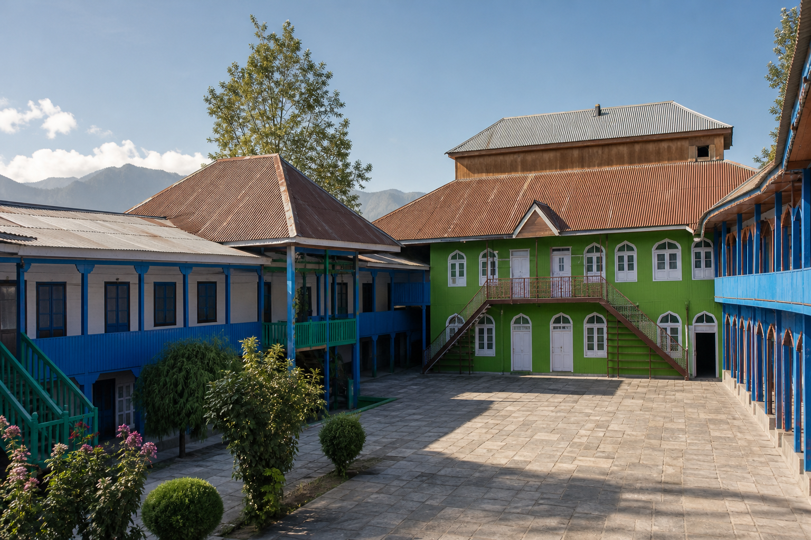

A calm, editorial landing image that keeps the real school at the centre and leaves room for the admission journey.

Use the actual campus as an editorial anchor: honest texture, a human scale, and a clear line into academics, activities, results, and parent services.
For admission pages, the same reference becomes a quiet monochrome texture behind one useful action: enquire, register, or continue an application.